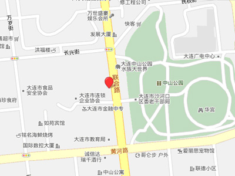

<ion-view>
  <ion-nav-bar class="bar-huatek">
    <ion-header-bar class="bar-huatek">
      <ion-nav-back-button>
        <i class="icon_back goBack"></i>
      </ion-nav-back-button>
      <ion-nav-title>网点查询</ion-nav-title>
    </ion-header-bar>
  </ion-nav-bar>
  <ion-content>
    <div ng-click="goWebsiteDetail()">
      
    </div>
  </ion-content>
</ion-view>
